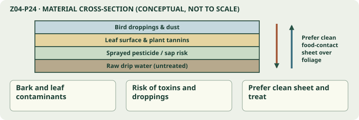

Z04-P24 · Water · Adapted historical material
Recognize contamination limits of leaf and branch runoff
Identify botanical, chemical and microbial hazards that limit collecting runoff from foliage or tree trunks.
When it applies · Wet forest environments where rainwater drips from branches or leaves and readers consider improvised plant collection.
Equipment · Dedicated clean catchment sheet if available, raw collection cup and validated microbial treatment.

Actions
- Prefer a clean synthetic or food-contact sheet over tree bark or foliage, which accumulate bird droppings, insect frass, pollen, mold and natural plant tannins.[W03, W30, ED]
- Never collect runoff from unidentified plants, toxic shrubs, sprayed roadside trees or sap-oozing bark because dissolved plant compounds or pesticides can enter the water.[W01, W22, W30, ED]
- If clean foliage dew or drip is ever gathered in an extreme emergency from known safe non-toxic surfaces, classify it strictly as raw water requiring clarification and microbial treatment.[W03, W08, W09]
Failure recognition · Treating clear raindrops gathered off unknown leaves or moss-covered bark as pure drinking water.[W03, W09, W30]
Verify · Confirm collection surfaces are known non-toxic and chemical-free, and apply full microbial treatment before consumption.[W01, W03, W09, ED]
Stop or change course · Reject foliage or bark runoff whenever plant identity, roadside spraying or bird-waste contamination is uncertain; use a clean catchment or alternate supply.[W01, W03, W30]
Evidence and editorial notes
- W01 · CDC · How to Make Water Safe in an Emergency (2024-09-19)
- Section: Water with fuel or toxic chemicals in it · Conditions: Suspected fuel, toxic chemicals or radioactive contamination
Support: Use a different safe supply. Standard boiling and microbial disinfection do not make this water safe.
Limitations: Does not list contaminant-specific lab remediation; applies to emergency consumer decisions only. · Conflicting evidence: None across CDC/EPA emergency guidance.
Editorial note: Used as upstream hard-stop gate prior to any field treatment card. · Specialist reviewer: Drinking-water safety and public health
Primary source · checked 2026-11-24 - W03 · CDC · Collecting Rainwater and Your Health (current web edition)
- Section: Rainwater might not be safe for household use · Conditions: Collected rain, including apparently clean runoff
Support: Germs and chemicals can enter from air, roof, gutters or storage. Prefer safe drinking water for ingestion.
Limitations: Site-specific roof and atmospheric chemistry vary; no universal roof-wash formula assumed. · Conflicting evidence: None; aligns with CDC potable-first hierarchy.
Editorial note: Separates catchment from raw storage and microbial treatment. · Specialist reviewer: Drinking-water safety and environmental health
Primary source · checked 2026-11-24 - W08 · CDC · How to Make Water Safe in an Emergency (2024-09-19)
- Section: Boil > Steps for boiling water > cloudy water · Conditions: Cloudy water with no identified chemical hazard
Support: Settling or cloth clarification only prepares water for treatment. Do not count it as disinfection.
Limitations: Removes coarse suspended solids only; dissolved toxins and microbes remain. · Conflicting evidence: Contradicts folklore claims that sand/cloth straining yields potable water; CDC governs.
Editorial note: Always depicted upstream of microbial treatment with an explicit barrier line. · Specialist reviewer: Drinking-water safety
Primary source · checked 2026-11-24 - W09 · CDC · Water Treatment Options When Hiking, Camping, or Traveling (current web edition)
- Section: Overview and water treatment methods · Conditions: Hiking or camping where no safe source is confirmed
Support: Even clear water can contain germs. Assess the supply and carry safe water or an appropriate treatment method.
Limitations: Visual clarity never detects microbes or dissolved chemical contaminants. · Conflicting evidence: None across CDC/NPS/EPA sources.
Editorial note: Reinforces clarity-is-not-potability invariant across all Z04 cards. · Specialist reviewer: Drinking-water safety and public health
Primary source · checked 2026-11-24 - W22 · US EPA · National Primary Drinking Water Regulations (current web edition)
- Section: National Primary Drinking Water Regulations · Conditions: Surface or groundwater near agriculture, industry, mines, roads, or old plumbing
Support: Regulated drinking-water hazards span inorganic chemicals (lead, arsenic, nitrate), organic solvents, pesticides, radionuclides, and microbes; microbial treatments do not remove dissolved inorganic or organic chemicals.
Limitations: Field observation cannot measure dissolved chemical concentration; laboratory testing is required. · Conflicting evidence: None; underpins strict chemical-rejection boundaries.
Editorial note: Explains why agricultural runoff, mine tailings, and road salt/fuel require source rejection. · Specialist reviewer: Environmental toxicology and drinking-water safety
Primary source · checked 2026-11-24 - W30 · CDC · Collecting Rainwater and Your Health (current web edition)
- Section: Collecting Rainwater > First-Flush, Debris, and Storage Hygiene · Conditions: Improvised or dedicated rainwater catchment systems
Support: Bird droppings, windblown dust, leaf tannins, and surface coatings enter initial runoff; isolate collection surfaces, screen coarse debris on the raw side, and treat before drinking.
Limitations: Even screened rain catchment remains raw water until validated microbial treatment is applied. · Conflicting evidence: None; prevents treating screened rain as potable.
Editorial note: Supports catchment geometry, leaf/branch runoff limits, and first-flush separation. · Specialist reviewer: Drinking-water safety and environmental health
Primary source · checked 2026-11-24
Source lineage · B003 leaf runoff and CDC rainwater guidance; new manuscript · Classification · Adapted historical material.